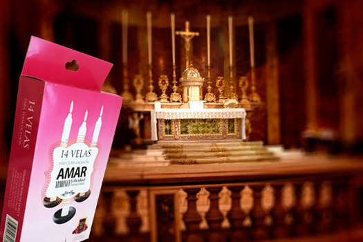

24 de Marzo 2015
El poder místicos de las velas
Estos antiguos cilindros de cera son fuente de energía y conexión con lo divino, no en vano son utilizadas en los rituales de todas las religiones. Elementos indispensables en la época que no existía luz eléctrica, las velas son potentes ofrendas y poseen distintas propiedades de acuerdo a sus colores. Aprenda a conocerlas. Las velas son poderosas fuentes de poder en la metafísica. La imagen de una pequeña llama encendida a partir de una mecha y cera fría conlleva una fuerte carga simbólica que ha atravesado generaciones y civilizaciones. Icono representativo de la vida y la energía, las velas están presentes en los matrimonios, en los altares y templos de todas las religiones, en rituales esotéricos, y también en los funerales.